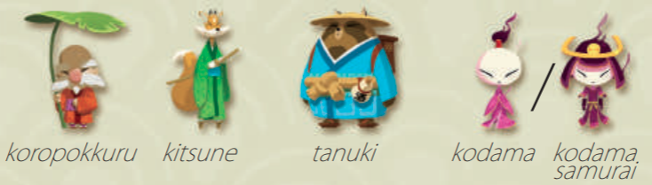
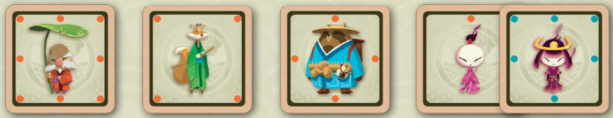

Congratulations ! You win this round!
Each player has 4 pieces, represented below. The koropokkuru is equivalent to the king in chess. The kodama can be transformed into the kodama samurai.
Be the first to capture the opponent koropokkuru or to bring yours safely to the last row of the board.
Each piece moves in a specific manner, indicated by the dots on this image. They can only move one square in any of the indicated direction.
On their turn, each player must do one of the following:
1. Move a piece to a free space, or to a space occupied by the opponent and capture it. To move a piece, click on it then on the square you want to move it to.
2. ”Parachute” a captured piece back onto the board. For this, just click a piece in the reserve, then a free square.